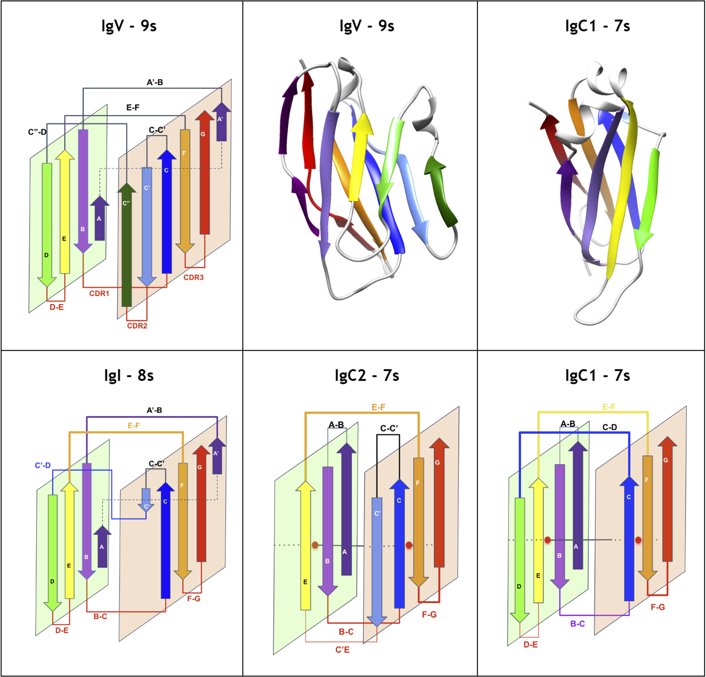

2025
G Protein Selectivity in Dopamine Receptors is Determined before GDP Release
Biochemistry, 64(11):2439–2454 (2025)

Journal Article
IgStrand: A universal residue numbering scheme for the immunoglobulin-fold (Ig-fold) to study Ig-proteomes and Ig-interactomes
PLoS Comput Biol, 21(4):e1012813 (2025)

Journal Article
Systemic HER3 ligand-mimicking nanobioparticles enter the brain and reduce intracranial tumour growth
Nature Nanotechnol, 20(5):683–696 (2025)

Journal Article
Thermodynamic role of receptor phosphorylation barcode in cannabinoid receptor desensitization
Biochem Biophys Res Commun, 743:151100 (2025)

Journal Article
The Complementary Roles of CXCR4 and CXCR7 in Melanoma Migration
OALib Journal (2025)

Journal Article
2024
Ig or Not Ig? That Is the Question: The Nucleating Supersecondary Structure of the Ig-Fold and the Extended Ig Universe
Methods Mol Biol, 2870:371–396 (2024)
Journal Article
Identification of Gα12- vs- Gα13-coupling determinants and development of a Gα12/13-coupled designer GPCR
Scientific Reports, 14(1):11119 (2024)

Journal Article
Towards a structural and functional analysis of the immunoglobulin-fold proteome
Adv Protein Chem Struct Biol, 138:135–178 (2024)

Review Article


2020
The complex role of the N-terminus and acidic residues of HdeA as pH-dependent switches in its chaperone function
Biophysical Chemistry, 264:106406 (2020)

Journal Article
Pseudo-Symmetric Assembly of Protodomains as a Common Denominator in the Evolution of Polytopic Helical Membrane Proteins
Journal of Molecular Evolution, 88(4):319–344 (2020)

Journal Article
2019
Understanding G protein selectivity of muscarinic acetylcholine receptors using computational methods
Int J Mol Sci, 20(21):E5290 (2019)

Journal Article
HER3-targeted protein chimera forms endosomolytic capsomeres and self-assembles into stealth nucleocapsids for systemic tumor homing of RNA interference in vivo
Nucleic Acids Research, 47(21):11020–11043 (2019)

Featured
A beetle antifreeze protein protects lactate dehydrogenase under freeze-thawing
Int J Biol Macromolecules, 136:1153–1160 (2019)

Journal Article
Chiral Graphs: Reduced Representations of Ligand Scaffolds for Stereoselective Biomolecular Recognition, Drug Design, and Enhanced Exploration of Chemical Structure Space
ChemMedChem, 14(8):798–809 (2019)

Invited